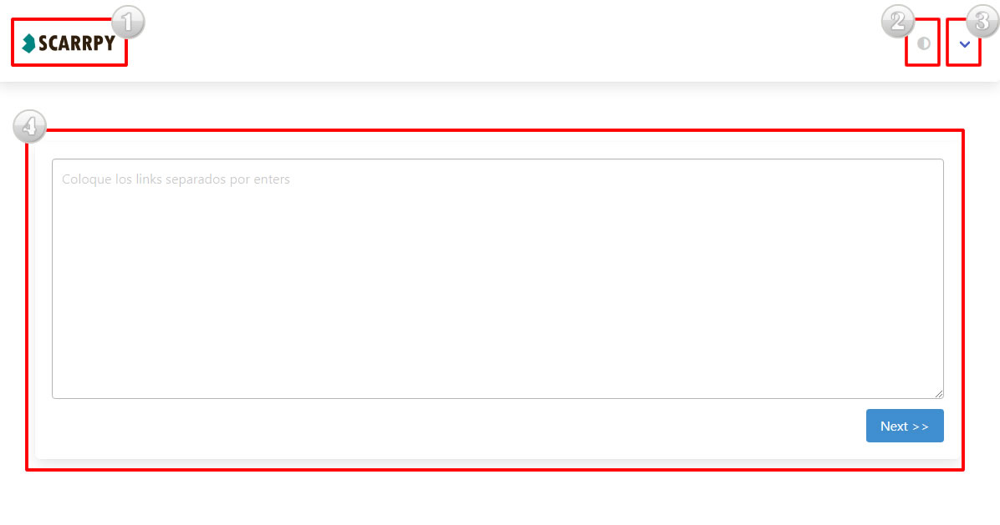

Man
Secciones
- Logo / Inicio
- Dark Mode
- Menú
- Area de trabajo
1. Logo
El logo, además de mostrar la identidad del sitio, nos lleva al inicio del sistema/ reiniciar el proceso.
2. Dark Mode
En caso de que se cansen los ojitos con tanto blanco, es posible colocar el modo oscuro en el sitio (experimental).
3. Menú
Menú del sistema. Dentro de este menú existen las siguientes opciones.
- Ayuda: Seccion para solventar todas las dudas, manual & issues.
- Config: Opciones extras de configuración del sistema.
- Acerca de: Información referente a la versión de sistema.
4. Área de trabajo
Aquí es donde se llevará a cabo todo el trabajo. En un inicio SOLO se mostrará la pantalla principal lista para recibir hipervínculos.

Quick Start
1.- En la pantalla principal coloque los links necesarios separados por enters.
[IMAGEN]
Anotación: Es posible colocar una lista completa de links pero hay que tomar en cuenta que esto puede hacer que se ralentize el trabajo del sistema ya
que hay algunas paginas (como el universal), que tardan mucho en enviar una peticion.